Informática Médica - IFMER 2026-II
Universidad del Rosario | Escuela de Medicina y Ciencias de la Salud
2026-10-14
IF-THEN).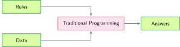
\[\text{Datos} + \text{Etiquetas} \rightarrow \text{Modelo}\]
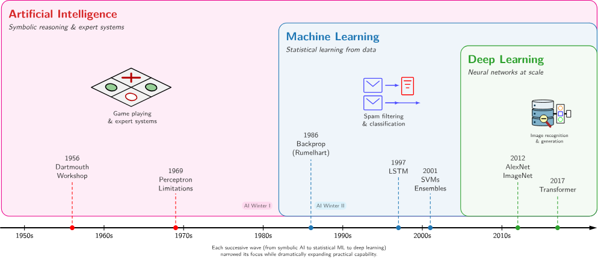
\[z = \sum_{i=1}^n w_i x_i + b = \mathbf{w}^T \mathbf{x} + b \quad \longrightarrow \quad a = \sigma(z)\]
if).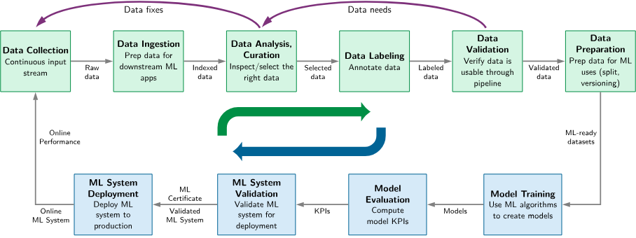
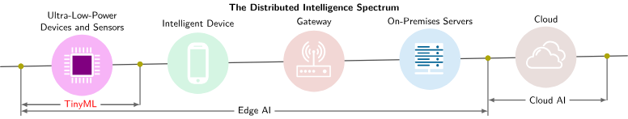
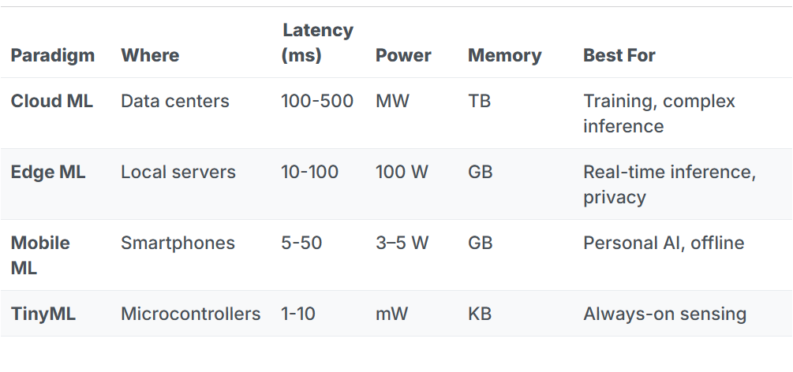
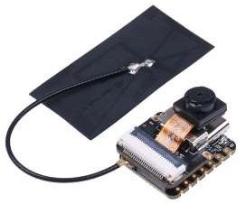
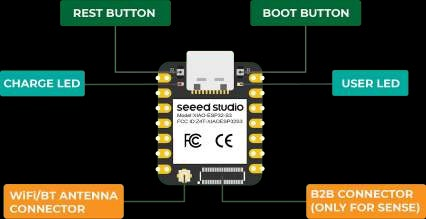
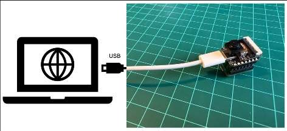
* Instalaresp32 by Espressif Systems.
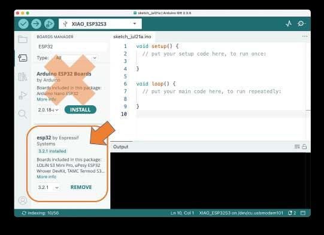
* Seleccionar placaXIAO_ESP32S3 y puerto COM.
#include <ESP_I2S.h>
I2SClass I2S;
void setup() {
Serial.begin(115200);
I2S.setPinsPdmRx(42, 41); // PDM Clock = 42, PDM Data = 41
I2S.begin(I2S_MODE_PDM_RX, 16000, I2S_DATA_BIT_WIDTH_16BIT, I2S_SLOT_MODE_MONO);
}
void loop() {
int sample = I2S.read();
if (sample != 0 && sample != -1 && sample != 1) {
Serial.println(sample); // Visualizar en Serial Plotter
}
}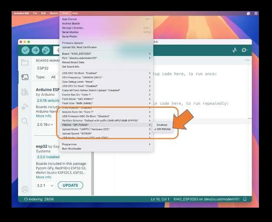
* HabilitarTools -> PSRAM: "OPI PSRAM" en Arduino IDE para disponer de 8 MB de RAM.
/audio_biomedico.wav en la MicroSD formateada en FAT32.1. Conectar Navegador ──► 2. Test Cámara ──► 3. Dataset Equipos
│ │
▼ ▼
6. Inferencia Local ◄── 5. Desplegar Modelo ◄── 4. Entrenar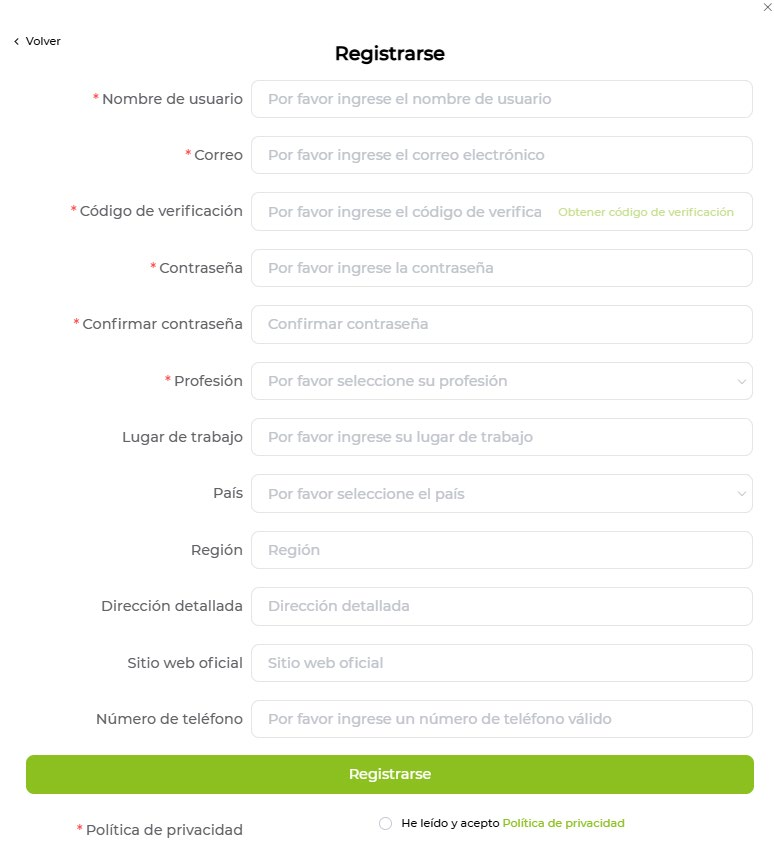
SeleccionarXIAO ESP32S3 Sense y conectar puerto serie.
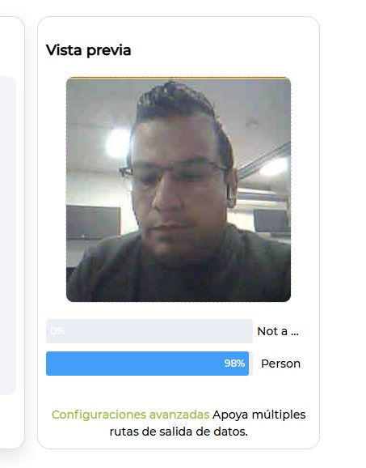
Comprobar enfoque y tasa de cuadros del sensor OV2640.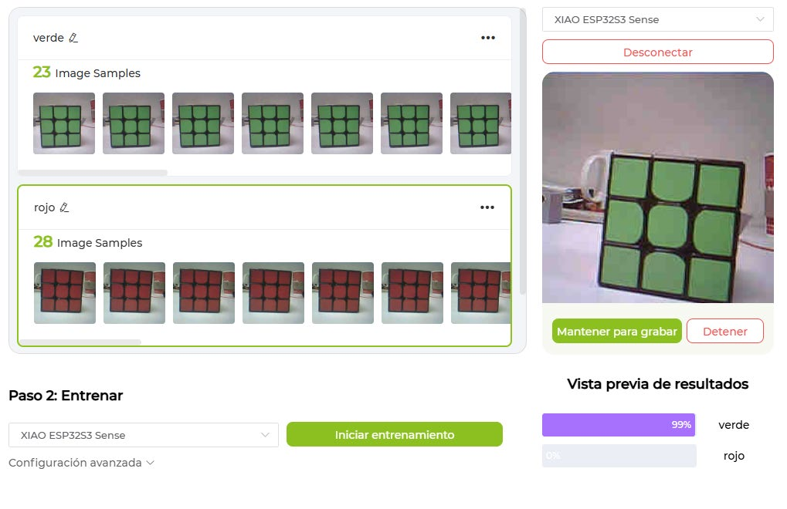
*Bomba_Infusion * Monitor_Signos * Desfibrilador
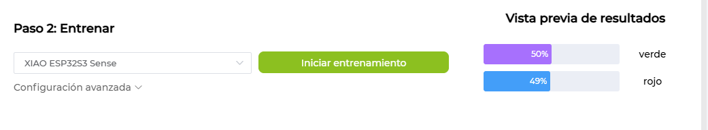
* Red convolucional cuantizada en INT8 para TensorFlow Lite Micro.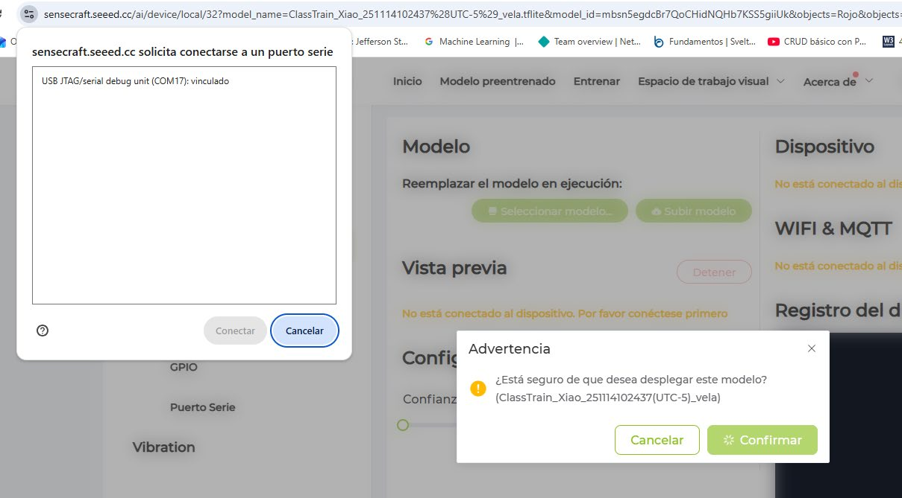
Grabación directa en memoria Flash/PSRAM de la MCU.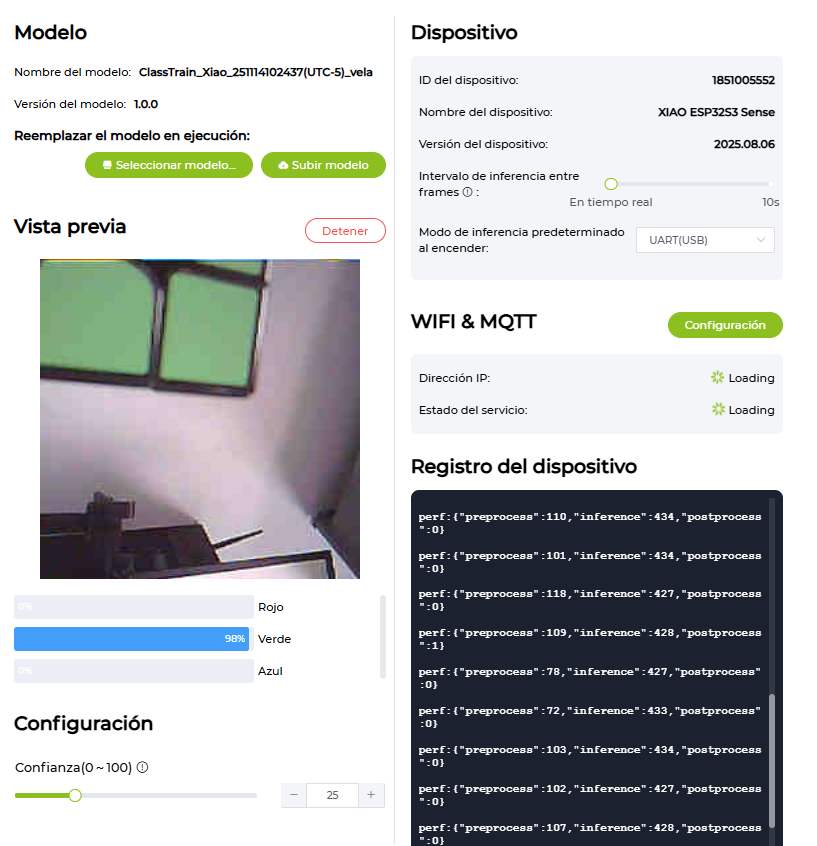
Reconocimiento autónomo del equipo médico sin internet.[ Cámara XIAO ESP32S3 ]
│ (Inferencia TinyML > 85%)
▼
[ Publicación MQTT JSON ]
│ Tópico: hospital/piso3/uci/equipos/identificacion
▼
[ Broker HiveMQ ]
│
▼
[ Tablet / Smartphone del Practicante ]
──► Enlace directo al Manual de Operación y MantenimientoInformática Médica - IFMER 2026-II | Big Data & TinyML